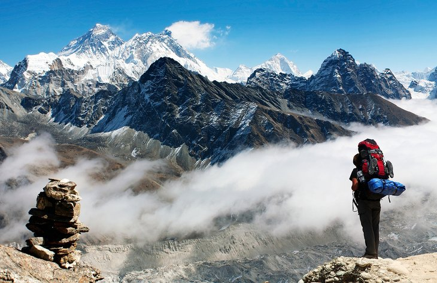

first place is Tour du Mont Blanc, Europe
One of the more luxurious hikes in the world is the Tour du Mont Blanc. The 170-kilometer (106-mile) trail traverses France, Switzerland, and Italy and is usually completed in 11 or 12 days. The scenery along the trail is spectacular as you ascend and descend around the Mont Blanc massif.
Mount Blanc
second place is Puez-Odle Altopiano, Italy
Located high in the Italian Dolomite range, the Puez-Odle hike takes in some of the best scenery of the region. You don't need to do the entire hike: the views right from the start are amazing. The trail starts at the top of the Dantercepies cable car and runs for approximately 15.5 kilometers (nine miles).
Puez-Odle Altopiano, Italy
the third place is everest
Up and down are probably the two best words to describe the Everest Base Camp hike (EBC). This 65-kilometer one-way trail literally climbs a mountain ridge then drops down to a river, then climbs another mountain ridge as it makes its way to base camp. The hike takes 12 to 14 days on average and is high – you will max out at 5,500 meters (18,044 feet). That said, most of the walking is done in the 3,500- to 4,500-meter (11,482 to 14,763 feet) range. The air up here is thin, and any exertion seems twice as hard .The hike is best done from March to May and September to December, when temperatures are moderate, and the skies are clear.

everest